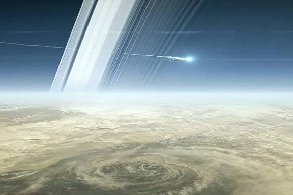
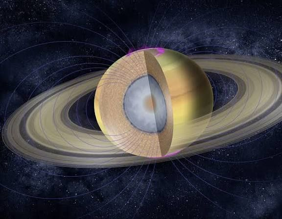

Saturn
Famous rings; gas giant.

အရွယ်အစား
116,460 km
တစ်နေ့ကြာချိန်
10h 42m
အပူချိန်
≈ -178 °C
လများ
27 Moons
Saturn သည် Solar System ထဲတွင် Sun မှ ဆဌမမြောက်အကွာအဝေးရှိသော ဂြိုလ်ဖြစ်သည်။ Saturn သည် Jupiter ပြီးနောက် Solar System ထဲတွင် ဒုတိယအကြီးဆုံးဂြိုလ် ဖြစ်သည်။ Saturn သည် gas giant ဂြိုလ်ဖြစ်ပြီး အဓိကအားဖြင့် ဟိုက်ဒရိုဂျင်နှင့် ဟီလီယမ် ဓာတ်ငွေ့များဖြင့် ဖွဲ့စည်းထားသည်။ Earth ကဲ့သို့ မျက်နှာပြင်မာကျောမှု မရှိပဲ ဓာတ်ငွေ့များဖြင့် အများအားဖြင့် ဖွဲ့စည်းထားသည်။ Saturn ၏ အထင်ရှားဆုံးအရာမှာ ၎င်း၏ ring များဖြစ်သည်။ ထို ring များသည် ရေခဲနှင့် ကျောက်စတုန်း အစိတ်အပိုင်းများစွာဖြင့် ဖွဲ့စည်းထားပြီး Saturn ကို အလွန်လှပစေသည်။ Saturn တွင် ဂြိုလ်တုများ များစွာရှိပြီး အကြီးဆုံးဂြိုလ်တုမှာ Titan ဖြစ်သည်။ Titan သည် လေထုရှိသော ဂြိုလ်တုတစ်ခုဖြစ်ပြီး သိပ္ပံပညာရှင်များက အလွန်စိတ်ဝင်စားစွာ လေ့လာနေကြသည်။

Surface Details
Internal Structureထူးခြားချက်များ
အလွန်လှပသော ring များရှိ Gas giant, ဒုတိယအကြီးဆုံးဂြိုလ် ဂြိုလ်တုများစွာရှိ, အကြီးဆုံး: Titan ဂြိုလ်တု ၂ လုံး (Phobos, Deimos) ရှိ